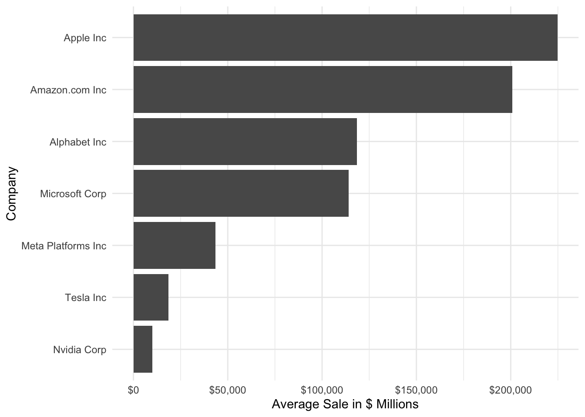

Homework 2 is all about using ggplot2. You will use tech_stocks_csv.zip data set you have used previously in Homework 1. You are aware of its structure and the meanings of the variables. Recall that you explored it in Homework 1. Knowing your data set well before you start exploring it is absolutely essential for data science.
setwd("/Users/c2cypher/codebase/msda/msda-grad-school/da-6233-902-data_analytics_visualization/HW2/Homework 2")d1 =read_csv("tech_stocks_csv.zip", show_col_types =FALSE) %>%filter(sale >0) %>%mutate(conm = stringr::str_to_title(conm), # Converts the string to title casedatadate = lubridate::ymd(datadate)) # Convert datadate into a date variable
This homework consists of 7 questions. Your objective is to reproduce the output shown in the HTML file for Q1 through Q7.
Q1 (3 points)
Create a bar graph of the average sales of each company using the variable sale such that the bars are arranged in an ascending order. I’m giving you the code to prepare the data set to make the plot:
d1_1 has the appropriate variable you need to create the bar plot. Notice that I have used .groups = "drop" inside summarize(). This makes sure that the data you will use in ggplot() is not grouped.
plot_1 =ggplot(d1_1,aes(x=reorder(conm, avg_sale), y=avg_sale)) +geom_col() +scale_y_continuous(labels = scales::dollar) +labs(y="Average Sale in $ Millions", x="Company") +coord_flip() +theme_minimal()plot_1

Q2 (1 point)
Modify the plot in Q1 to add text labels to the bars. Note that I have used hjust = -0.2 and size = 3 for the text labels.
plot_2 =ggplot(d1_1,aes(x=reorder(conm, avg_sale), y=avg_sale)) +geom_col() +scale_y_continuous(labels = scales::dollar) +labs(y="Average Sale in $ Millions", x="Company") +coord_flip() +geom_text(aes(label=round(avg_sale/1000,0)),hjust=-0.2, size=3) +theme_minimal()plot_2
Q3 (2 points)
In finance, it is widely believed that companies with more R&D prefer lower debt. Let’s explore whether we can observe this relationship in our data. Using mutate, first create these two variables. (I am giving you the exact formulas to put inside mutate().)
debt_ratio = (dlc + replace_na(dltt, 0)) / at
rnd_int = xrd / sale
Next, create a scatter plot with debt_ratio on the X axis and rnd_int on the Y axis.
Profit margin is simply profits divided by sales. Compare profit margins of the following six companies - Apple, Tesla, Meta, Microsoft, Amazon, and Nvidia - over the full sample period. Use fyear on the X axis. fyear is the fiscal year.
Here I give you the code to get the data set in required form. First, note that I am using the variable tic to filter certain “ticker symbols”, which are the IDs used by stock markets for companies. I am doing this simply to save on typing rather than writing out the entire company names! You could also use gvkey as it is a company identifier. But gvkey are not intuitive. Ticker symbols can help you guess (in most cases) what a stock is.
As you are using fyear for plotting a time series, we have to make sure that fyear is indeed interpreted by ggplot2 as a time variable. However, it’s not that straightforward. This is because fiscal years, unlike calendar years, don’t all end exactly on the same day! I know it sounds insane but that’s true. Think about this like school years in different school districts. If the fiscal year ends in different months, how can we create a valid comparison among these companies? Indeed, the variable datadate, which is the fiscal year end date, is not the same for all the companies for any given fiscal year. Luckily we are dealing with annual data and so we can artificially choose to pick a common year end date for the sake of making the plot. Note that this is not the right thing to do for statistical or financial analysis! This simply helps us in making a meaningful plot. As such, I am setting the year end date for all the fiscal years to December 31st. Below, paste function will create strings in “yyyy-mm-dd” format with mm being 12 and dd being 31 as show below. Next, as.Date() function from base R will convert it into an actual date format!
Tesla is the largest car manufacturer in the world by market value. But what about sales? Let’s compare sales and market value over the 10/11 years period in our sample.
First create a data frame that you can use to create a plot where you can compare sales and market value in the same plot. This requires rearranging the data into “long” form, where we will stack Tesla’s sales and market value on top of each other.
Here is the code to create such a data set. Please read it carefully to understand all the steps.
When the time variable is discrete, we can also show a time trend using a bar plot. This is quite common in practice. fyear is an integer so we can use it as a discrete variable and create a bar plot of profits for Facebook and Nvidia as shown below. Manually change the fill of bars using the following colors: c("#5cc9f5", "#b131a2")
Use Mark Zuckerberg’s cutout to create the following visualization. You are free to position the picture anywhere and in any size you want. Just don’t cover the bars.